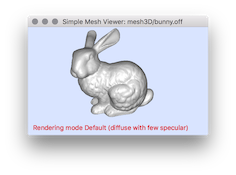
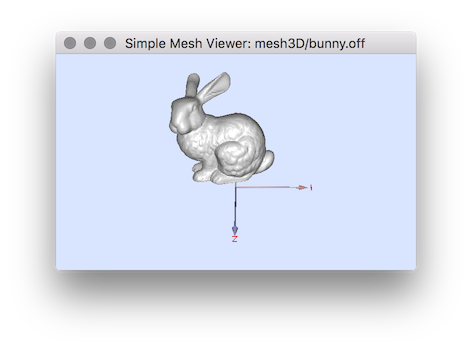
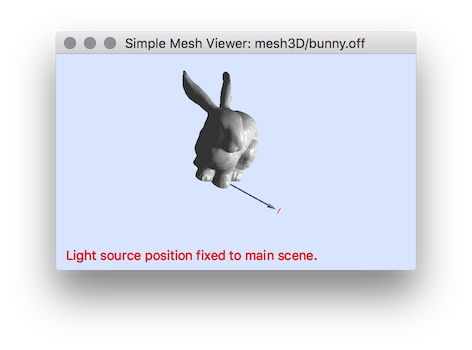
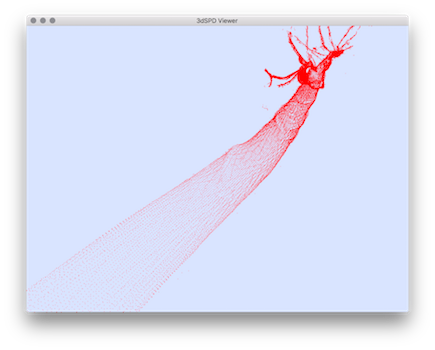
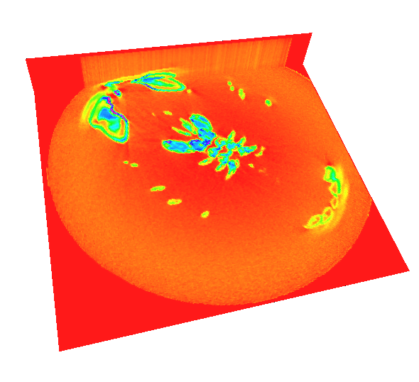

Table of Contents
- Display3D: a stream mechanism from abstract class Display3D
- Interactive visualization from Viewer3D
- Alternative visualization without QGLViewer dependency
- Visualization of DigitalSet and digital objects
- Mode selection: the example of digital objects in 3D
- Useful modes for several 3D drawable elements
- Changing the style for displaying drawable elements.
- Adding clipping planes
- Adding 2D image visualization in 3D
- Adding 3D image visualization
- Customizing Slice Image visualization
This part of the manual describes how to visualize 3D objects and how to import them from binary file (.obj or pgm3d)
Display3D: a stream mechanism from abstract class Display3D
The semi abstract template class Display3D defines the stream mechanism to display 3d primitive (like PointVector, DigitalSetBySTLSet, Object ...). The class Viewer3D, Board3D and Board3DTo2D implement two different ways to display 3D objects. The first one (Viewer3D), permits an interactive visualization (based on OpenGL). The second (Board3D) provides mechanism to export the 3D objects to and Wavefront OBJ format. The last one (Board3DTo2D) provides 3D visualization to 2D vector format (using a projection mechanism based on the CAIRO library).
Display3D have two template parameters which correspond to the digital space and the Khalimsky space used to put the figures. From the Digital Space and Khalimsky Space, we use the associated embedding mechanism to convert digital objects to structures in \( \mathbb{R}^n\).
Viewer3D and Board3DTo2D allow to set and change the camera point of view for the visualization.
Interactive visualization from Viewer3D
The class Viewer3D inherits from the base class QGLViewer (which is based on QGLwidget). It permits to display simple 3D shapes. LibQGLViewer ( http://www.libqglviewer.com ) is a C++ library based on QT allowing to access to simple 3D features like camera moving, mouse, keyboard interaction, clipping plane .... etc.
It possess the additional functionality to display 2D slice image from a volume one.
First to use the Viewer3D stream, you need to include the following headers:
The following code snippet defines three points and a rectangular domain in Z3. It then displays them in a Viewer3D object. The full code is in viewer3D-1-points.cpp.
The first step to visualize 3D object with Viewer3D is to create a QApplication from the main():
Then we can display some 3D primitives:
You should obtain the following visualization:

Interactive change of rendering mode
By default the rendering mode of the Viewer3D is defined by melange of diffuse (Lambertian) and specular parts. The user can swith to the following mode by using the key P :
| type | default mixte | metallic | plastic | lambertian |
|---|---|---|---|---|
| mode | 0 | 1 | 2 | 3 |
| Ex: |  |  |  |  |
Light source position modes
The light source position is by default defined according to the camera position and its position will not change even after camera moves (default mode). By this way, if you move the camera, the object will be always illuminated (see images of mode 0 of the following tabular). This default light position could be changed interactively by a mouse move in the Viewer3D (with the key SHIFT+CTRL (SHIFT+CMD on mac)).
There exists a second mode where the light source position will be fixed according the main scene axis. In this case, even if the camera move, the light source will have the same position towards the object of the scene (see for instance images of mode 1 of the following tabular). As for the previous mode, the default light position could be changed interactively by a mouse move in the Viewer3D (with the key SHIFT+CTRL (SHIFT+CMD on mac)).
To change between the two light position mode you can use the Key P in the viewer3D.
| Light position mode | default position | after camera move |
|---|---|---|
| 0 |  |  |
| 1 |  |
- Note
- Note that you can display the camera settings in the console (key C) which can be used in Board2Dto3D described in the following.
Ball display modes
The Viewer3D class has a special mode to display balls (added from the Display3D method addBall() ). By default, the balls are constructed with OpenGl quadrangulated sphere which can be slow if the number of ball is huge. In the latter case, it is possible to use OpenGL points to increase display performance. To use this mode, you have just to activate it with the method setUseGLPointForBalls() when needed:
By changing the mode you will obtain such display:
| ball display default mode | ball display with OpenGL point mode |
|---|---|
 |  |
You can also change the ball display mode interactively by using the key O.
Alternative visualization without QGLViewer dependency
There are two ways to obtain an alternative visualization without the dependency of the 3D interactive viewer:
- Static display by using Board2Dto3D.
- Export the 3d objects into 3d files (OBJ format) with Board3D.
Static display
The same visualization can be obtain with the Board2Dto3D class. You just need to adapt the camera settings (see example io/boards/dgtalBoard3DTo2D-1-points.cpp).
This example should provides a comparable visualization.
Export objects with Board3D
To export 3d objects into OBJ format you need simply to use the Board3D class which inherits to the Display3D class. You can for instance follow these steps:
And then visualize the resulting obj and mtl file by using for instance blender:

- Advanced:
- By setting a second parameter to true when calling the saveOBJ, the geometrical objects will be scaled so that they fit in a [-1/2, 1/2]^3 domain.
- Note
- You do not need a Board3D to export an OBJ file. There are custom methods to export OBJ files for some classes:
- Mesh: use MeshWriter::export2OBJ
- TriangulatedSurface: use MeshHelpers::exportOBJ, and MeshHelpers::exportOBJwithFaceNormalAndColor
- PolygonalSurface: use MeshHelpers::exportOBJ, and MeshHelpers::exportOBJwithFaceNormalAndColor
- you may also use class Shortcuts, see Shortcuts (for the impatient developper)
Visualization of DigitalSet and digital objects
The Viewer3D class allows also to display directly a DigitalSet. The first step is to create a DigitalSet for example from the Shape class.
You should obtain the following visualization (see example: viewer3D-2-sets.cpp ):

Mode selection: the example of digital objects in 3D
As for Board2D, a mode can be choosen to display elements (SetMode3D). You just have to specify the classname (the easiest way is to call the method className() on an instance of the correct type and the desired mode (a string).
or change the couple of adjacency
You should obtain the two following visualizations (see example: viewer3D-3-objects.cpp ):

Note that digital set was displayed with transparency by setting a custom colors.
Useful modes for several 3D drawable elements
Listing of different modes
As for Board2D the object can be displayed with different possible mode:
- class PointVector, modes: "" / "Both", "Paving" (default), "Grid"
- class DigitalSetBySTLSet and DigitalSetBySTLVector : "", "" / "Both", "Paving" (default), "PavingTransp", "Grid".
- class Object, modes: "" /"Basic" (default), "DrawAdjacencies", "PavingTransp".
- class HyperRectDomain 3D, modes: "" / "Grid" (default), "Paving", "PavingPoints", "PavingGrids", "BoundingBox".
- class HyperRectDomain 2D, modes: "" / "BoundingBox" (default), "Grid", "InterGrid" **.
- class KhalimskyCell , modes: ""(default) / "Highlighted" , "Transparent", "Basic", "Illustration", "IllustrationCustomColor".
- class SignedKhalimskyCell , modes: "" (default) / "Highlighted" , "Basic", "Transparent", "Illustration", "IllustrationCustomColor".
- class StandardDSS6Computer , modes: "" (default) / "Points", "BoundingBox *".
- class Mesh, modes: "" (default) / "Faces *".
- class ImageContainerBySTLVector, ImageContainerBySTLMap 2D/3D modes: "", (default), "BoundingBox", "Grid", "InterGrid" . **
- class ImageAdapter, ConstImageAdapter 2D/3D modes: "", (default), "BoundingBox", "Grid", "InterGrid" . **
Note that for KhalimskyCell and SignedKhalimskyCell the default colors (with CustomColors3D objects) can be changed only with the empty mode ("") and the "IllustrationCustomColor" mode.
"*": partially for (Board3DTo2D), see issue 582. "**": only for Viewer3D.
Examples with Objet modes
The file viewer3D-4-modes.cpp illustrates several possible modes to display these objects:
We can display the set of point and the domain
without mode change (see image (a)):
We can change the mode for displaying the domain (see image (b)):
(Note that to avoid transparency displaying artifacts, we need to display the domain after the voxel elements included in the domain)
It is also possible to change the mode for displaying the voxels: (see image (c))
we obtain the following visualizations:


Illustrating KhalimskyCell with the "Illustration" mode
The "Illustration" mode is defined to construct illustrations composed of KhalimskyCell. In particular it permits to increase the space between cells and improve the display visibility. It can be used typically as follows: First you need to add the following header:
From a SignedKhalimskyCell (SCell in DGtal::Z3i) you have to select the "Illustration" mode :
Then, to display a surfel with its associated voxel, you need to transform the surfel by constructing a shifted and resized version (DGtal::TransformedKSSurfel) according to its associated voxel:
You will obtain such type of illustration (obtained from the example viewer3D-4bis-illustrationMode.cpp ).
- Advanced:
- There exists a specific method to display surfels (Khalimsky cells of dimension 2 in a space of dimension 3) as quadrilaterals where the user can prescribe a unitary normal vector. In Viewer3D, the normal vector is used in the rendering process (useful to check the geometrical consistency of a normal vector field). Basic usage is:
or if the surfel is not oriented (unsigned khalimsky cell).
In the later case, the quadrilateral vertices are oriented such that the dot product between the normal vector and the quad canonical normal vector is positive. Finally, these two methods accept a last boolean parameter such that if true, the quad is geometrically duplicated with opposite normal vector (double-quad rendering).
Changing the style for displaying drawable elements.
As for Board2D, it is possible to custom the way to display 3D elements by using an instance of the following classes:
- CustomColors3D: to change the color used to display surface primitive (GL_QUADS) and the pen color (LINE/POINTS) ;
The custom color can be applied by an instance of the CustomColors3D as follow:
The example viewer3D-5-custom.cpp illustrates some possible customs :

Adding clipping planes
It also possible through the stream mechanism to add clipping plane with the object ClippingPlane. We just have to add the real plane equation and adding as for displaying an element. The file viewer3D-6-clipping.cpp gives a simple example.
From displaying a digital set defined from a Norm2 ball,
we can add for instance two differents clipping planes:

It also possible to remove the visualization of the transparent clipping plane by adding boolean option:
Adding 2D image visualization in 3D
Adding 2D slice images
With the Viewer3D class it is possible to display 2D slice image from a volume one. It can be done in few steps (see example of io/viewers/viewer3D-8-2DSliceImages.cpp) :
And the display them using the classic stream operator:
Finally you can adjust the image setting with the Display3DModifier UpdateImagePosition and UpdateImageData object:
You will obtain such a visualization:
You can also change the default mode by using:
and by changing the "BoundingBox" mode by "InterGrid" you will obtain the following visualization:
See more details on this example io/viewers/viewer3D-8-2DSliceImages.cpp or from the DGtalTools repository with DGtalTools/visualization/3dImageViewer.cpp viewer.
Adding 2D images (from any embedding)
The slice images are not the only way to display 2D images in 3D. A 2D image can also be extracted and embedded in 3D by using a single embedding functor (Point2DEmbedderIn3D). The example io/viewers/viewer3D-8bis-2Dimages.cpp illustrates such a display.
First we need to add the header file associated with the Point2DEmbedderIn3D:
Then, the type definition of ConstImageAdapter is added:
The resulting 2D domain can be deduced from the width used in the functor:
The embedder then be used to extract the image:
and used to display the image with the correct coordinates:
This example will produce such a visualization:
Adding 3D image visualization
In the same way a 3D image can be displayed. By following the same stream operator you will obtain such example of display:

See more details in the example: io/viewers/viewer3D-9-3Dimages.cpp
Customizing Slice Image visualization
By default an image is displayed in gray scale levels from its scalar values. However it is possible to display color texture image by using the object AddTextureImage2DWithFunctor or AddTextureImage3DWithFunctor (of the DrawWithDisplay3DModifier class) with the RGBmode which allows to interpret the scalar as a color value. A color functor can also be specified to generate a given color.
For instance the previous examples can easily displayed with color map:
First we generate a color functor to generate unsigned integer interpreted as RGB color:
- Adding the header to use hueShadeMap: with a functor to transform integer representing grayscale to integer representing color:#include "DGtal/io/DrawWithDisplay3DModifier.h"#include "DGtal/io/viewers/DrawWithViewer3DModifier.h"#include "DGtal/io/colormaps/HueShadeColorMap.h"#include "DGtal/io/Color.h"struct hueFct{inlineunsigned int operator() (unsigned char aVal) const{HueShadeColorMap<unsigned char> hueShade(0,255);Color col = hueShade((unsigned char)aVal);return (((unsigned int) col.red()) << 16)| (((unsigned int) col.green()) << 8)|((unsigned int) col.blue());}};
- Instead to use directly the image and the stream operator we add the AddTextureImage2DWithFunctor object: viewer << AddTextureImage2DWithFunctor<MySliceImageAdapter, hueFct, Z3i::Space, Z3i::KSpace> (aSliceImageZ, hueFct(), Viewer3D<Z3i::Space, Z3i::KSpace>::RGBMode);viewer << AddTextureImage2DWithFunctor<MySliceImageAdapter, hueFct, Z3i::Space, Z3i::KSpace> (aSliceImageY, hueFct(), Viewer3D<Z3i::Space, Z3i::KSpace>::RGBMode);
- Note that also can update the image position image data as in the previous example and we need to recall the functor function if we want to keep the same data interpretation : You will obtain such a visualization:viewer << DGtal::UpdateImagePosition<Z3i::Space, Z3i::KSpace>(3, MyViewer::yDirection, 500.0, 50.0, 0.0);viewer << DGtal::UpdateImageData<MySliceImageAdapter, hueFct>(2, aSliceImageZ, 500, 0, 10, 0.0, MyViewer::zDirection, hueFct());viewer << MyViewer::updateDisplay;Illustration of the 2D image slice visualization.